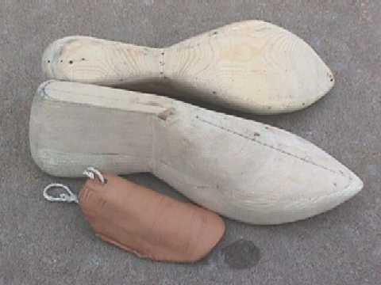
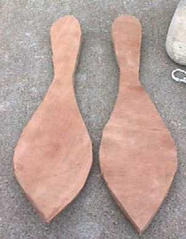
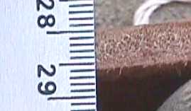
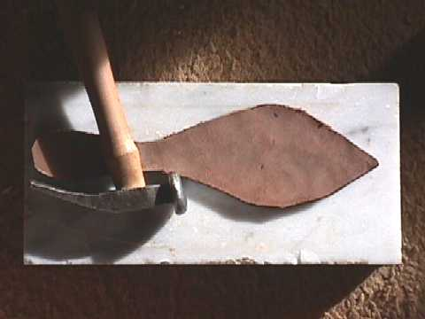

By Marc Carlson
Text last updated 21 February 2003.
This particular project was started to give a step-by-step illustration of making a pair of early 15th century shoes for the discussion list Medieval-Leather@Yahoogoups.
The materials and techniques are as accurate as I can get them. These include
The pattern is a fairly straight adaptation of the button shoe design found at http://www.personal.utulsa.edu/~marc-carlson/shoe/SHOES/SHOE36.HTM, which seems to have been worn from about 1250 on.
The lasts are generally based on a number of lasts from the period, most of which are discussed in Olaf Goubitz's portion of Stepping Through Time, as well as notes on lasts described by Marquita Volken (and specifically the Lubeck last) and shaped to my foot's measurements. From those designs, I took some pine and hand-shaped them (with a bit of help from a friend getting the bottom portions the same). I'm still not happy with the final product, but I'm certain that it's close.
I am told by Al Saguto, Master Shoemaker, that these should be sanded and scraped more smoothly, then soaked in linseed oil until it can take no more oil, then after that dried, rubbed down heavily in beeswax. This might well help in the long run, and it is more likely to help the last survive use longer. Unfortunately these were done plain.
 |
The Lasts |
 |
The Soles |
 |
Thickness of soling material before beating out the leather (or compressing the leather). It should be noted that we don't know that beating out was done, but based on a not exhaustive survey of shoe soles, it's entirely plausible that this practice was known. |
 |
Soling during beating out. |
Return to Contents
Footwear of the Middle Ages - Making a more accurate 15th Century style shoe (page 1). Copyright � 2003 I. Marc Carlson. This page is given for the free exchange of information, provided the author's name is included in all future revisions, and no money change hands, other than as expressed in the Copyright Page.